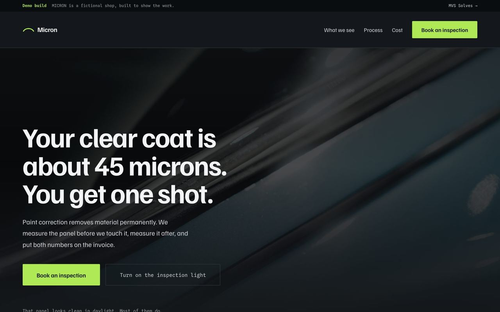
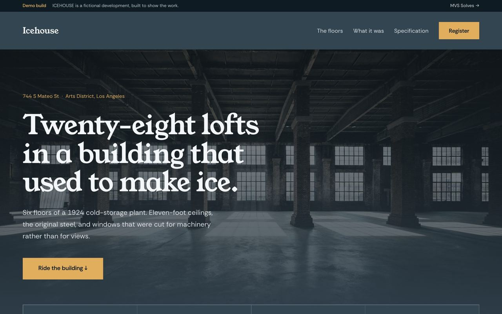
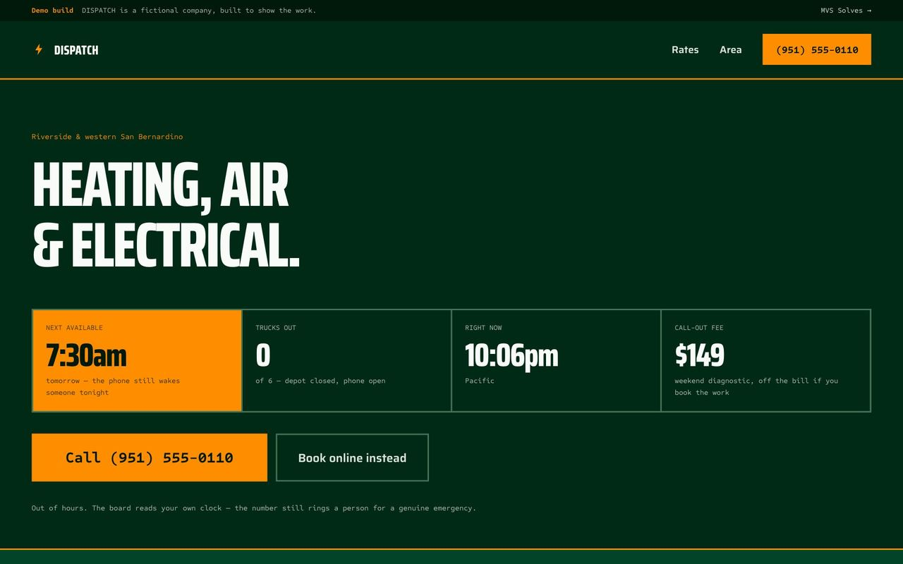
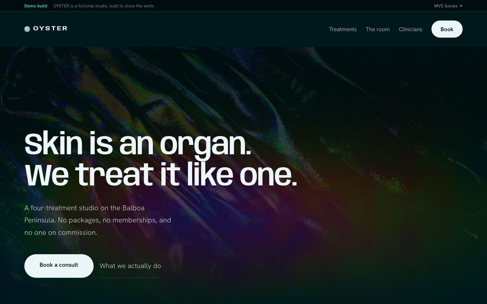
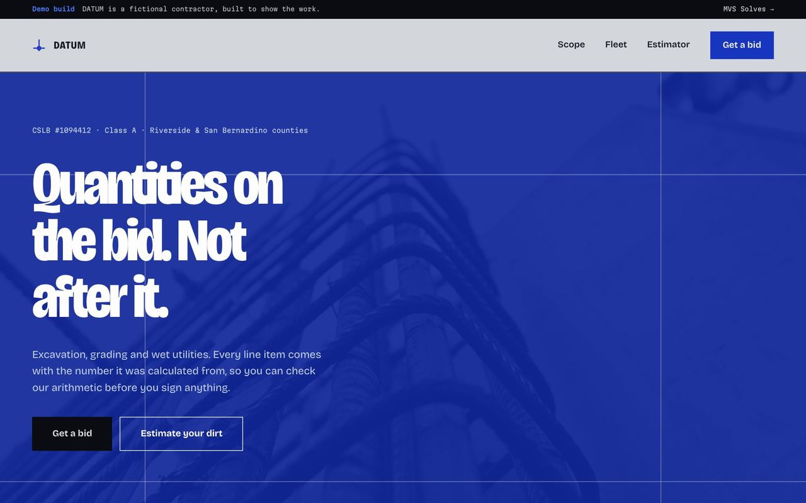
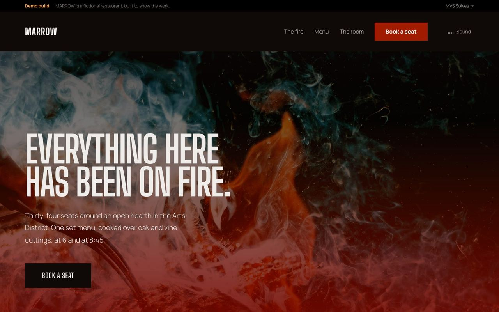
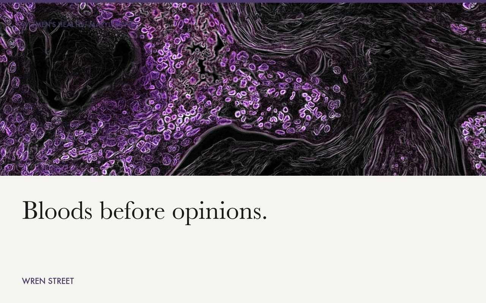
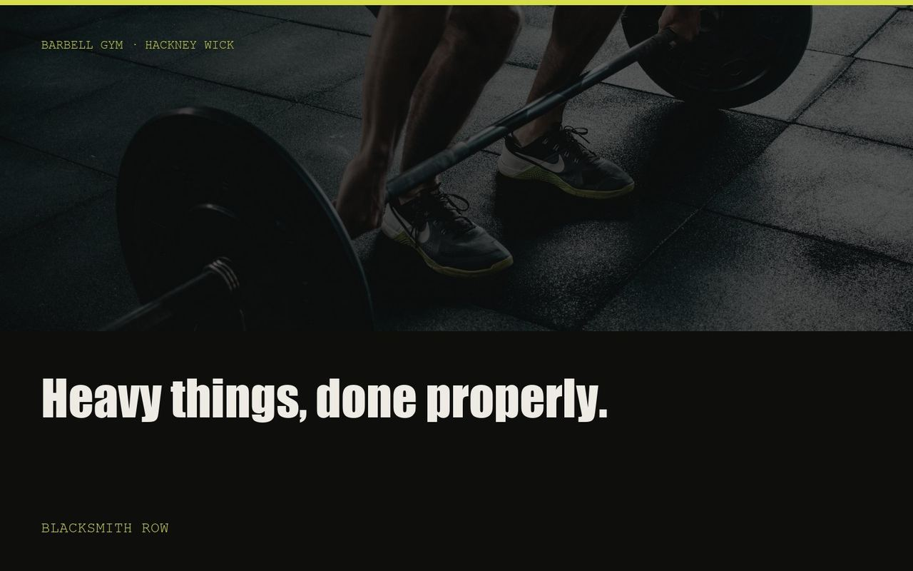
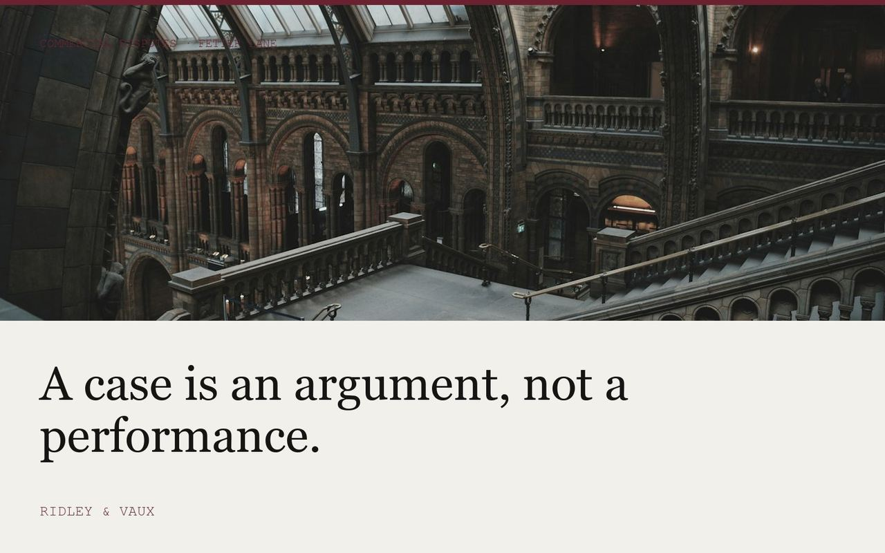

Open build →Micron
Paint correctionNo black-and-red tuner clichés — it reads like a conservation lab, because irreversible material removal is what the work actually is. Switch on the inspection light and 326 generated defect marks appear over the hero: swirls, deep scratches, etching and somebody else's buffer trails, each filterable.
Graphite Acid lime Familjen Grotesk / Spline Sans Mono
Open build →Icehouse
28 lofts, a 1924 cold-storage plantThe only mid-tone ground in the library — every other build sits at one end or the other. Scroll rides the building floor by floor, six drawn plans and a lift car that climbs the shaft with you. Scroll-driven, never scroll-hijacked: the scrollbar always tells the truth and a fast flick still gets you past.
Cold slate Brass Young Serif / Rethink Sans
Open build →Dispatch
Heating, air & electricalNobody wants a premium experience from an electrician at 6am with no heat — so this refuses to be a marketing page. The board is the hero: no photo, no trust headline. It reads your clock for the real next slot, trucks out and whether the after-hours rate applies. Every rate published, which the trade never does.
Utility green Hi-vis Saira / Sometype Mono
Open build →Oyster
Skin studioA WebGL thin-film shader runs over the hero photograph and tracks the cursor — iridescence is the only colour on the page. No serif anywhere, because every med-spa on earth uses one. Picking treatments totals the price and the visits it really takes.
Abyss Nacre Anybody / Hanken Grotesk
Open build →Datum
Excavation & site workPremium design on a trade that never gets it. Chalk-line blue rather than safety orange, setting-out lines that snap in on load, and an estimator that turns length, width and depth into loose yards and truck loads.
Chalk line Concrete Bricolage Grotesque / Martian Mono
Open build →Marrow
Live-fire restaurantDrenched ember, not the charcoal-and-amber every steakhouse already has. Headlines scramble into place, embers drift on canvas, and the hearth you can switch on is synthesised in Web Audio rather than loaded as a file.
Ember Flame Big Shoulders / Manrope
Open build →Wren Street
Private clinicWomen's health and longevity practice. The capsule is the recurring container shape, and abstract micrographs stand in for stock medical photography. Booking writes back a live summary of what you have chosen.
Paper Iodine violet Instrument Serif / Karla
Open build →Blacksmith Row
Barbell gymPeak-action photography doing the work motion usually does. One sulphur accent that only ever marks a number or something you can press, and an eighteen-session timetable that filters by day.
Ink Sulphur Archivo Black / DM Mono
Open build →Ridley & Vaux
Barristers' chambersNo photographs of people anywhere — credibility comes from the practice index, the published record and a list of members by year of call, which filters to silks or juniors.
Shell Oxblood Petrona / IBM Plex Mono